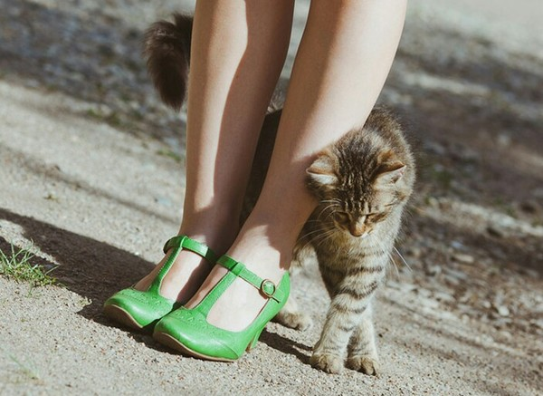
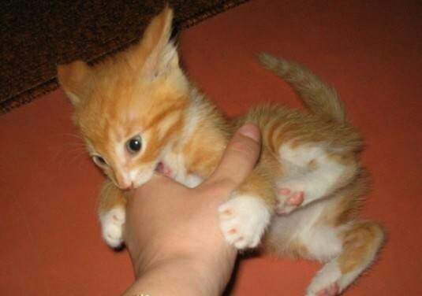
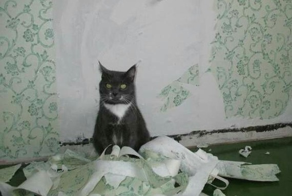
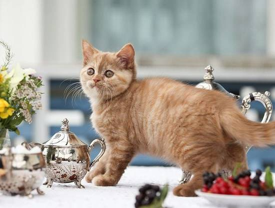
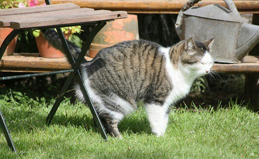
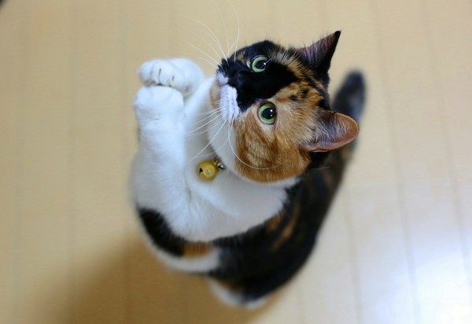
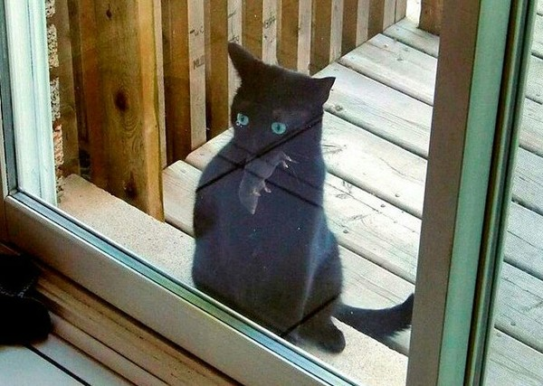
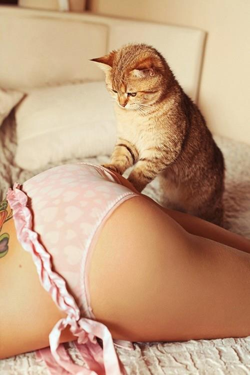

Привычки и повадки котиков
Всем известно, что котики очень независимые создания. Еще Ричард Киплинг это заметил и правильно определил жизненную их позицию: «Я кошка, я гуляю сама по себе и делаю то, что мне хочется!» Вот с этим «я делаю то, что хочется» постоянно сталкиваются хозяева и порой не знают, как реагировать на проявление особенностей характера своей любимицы.
Котик путается под ногами
Это вам кажется, что он путается, а на самом деле, таким образом котик выражает к вам свою любовь и привязанность. Так заложено в природе кошачьих, да и других животных, что по запаху они различают своих и чужих. Когда котик подходит и начинает тереться о ноги, он вас попросту метит и устанавливает свое право на вас для других животных – «Мое! Руками и лапами не трогать!».
Котик кусается и царапается
Котик – хищник. И об этом нельзя никогда забывать. Поэтому котята всегда играют в охотников. Причиной повышенной кусучести может стать и сексуальная потребность. Особенно это проявляется у котиков - мальчиков.
Котик рвёт мебель и обои когтями
Мало кому из владельцев котиков нравятся «махровые» диваны и кресла, поэтому, если ваш котик постоянно пытается придать новый облик мягкой мебели, то стоит взяться за воспитание любимца. Но мягко и спокойно. Котики ведь дерут мебель и обои не потому что им нравится доводить вас до белого колена – это просто заложенная программа по обозначению территории.
Котик ходит по столам
Во-первых, с точки зрения котика, он не по столам ходит, а инспектирует свою территорию. Во-вторых, на столах иногда попадается что-то очень вкусное. Поэтому причин не ходить, котик не видит.
Котик метит территорию
Часто котик начинают метить территорию, что естественно, не радует хозяев. Причина такого поведения лежит все там же – это инстинкт.
Котик постоянно выклянчивает еду
А вот эта привычка целиком и полностью заслуга хозяев. Стоит один раз поддаться жалости, при виде скорбного выражения мордочки – и все. Котики очень умные животные и умеют манипулировать с ловкостью дипломированного психотерапевта
Котик приносит вам «подарки»
Котикам нравится приносить хозяевам мертвых мышей, птиц, ящериц и насекомых. Даже после «Нет уж, спасибо» питомцы будут продолжать одаривать вас. Это совершенно нормально, это проявление заботы и любви. Откуда котику знать, что люди не едят мертвых грызунов и жуков?
Котик мнёт что-то лапками
Котики любят взбираться на колени и массажировать любимым хозяевам ноги. Такое поведение – явный признак доверия. Котик показывает, что он чувствует себя в безопасности, что ему уютно и спокойно. Такое поведение закладывается в питомце еще с детства, когда он, будучи маленьким котенком, с любовью массировал крохотными лапками мягкий пушистый живот мамы-кошки, лакомясь вкусным молочком.